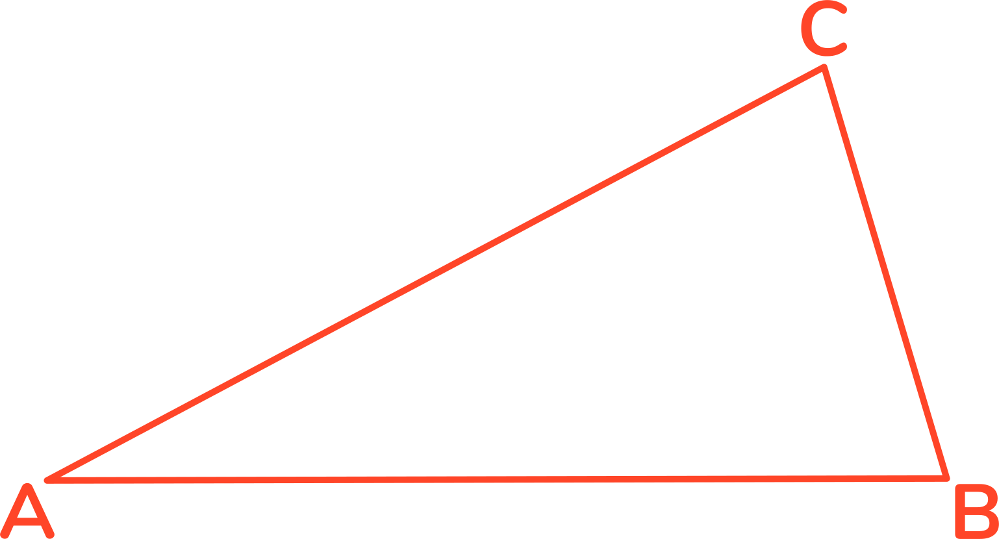
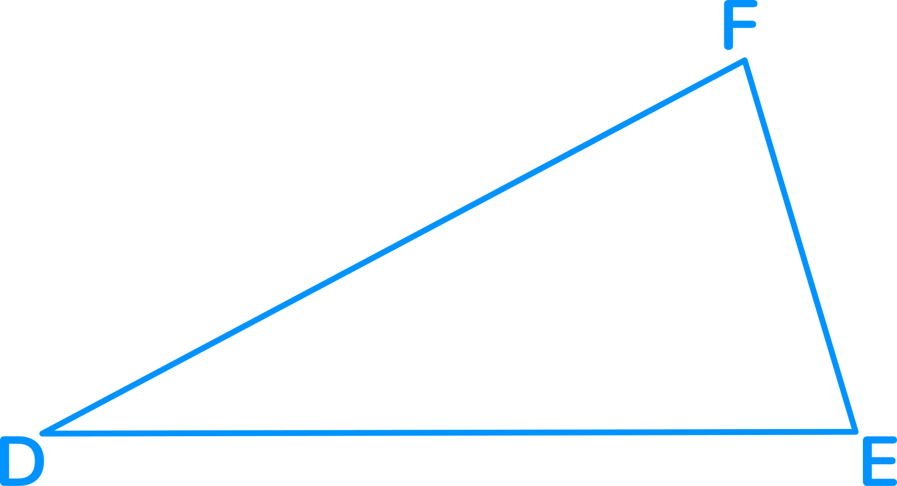
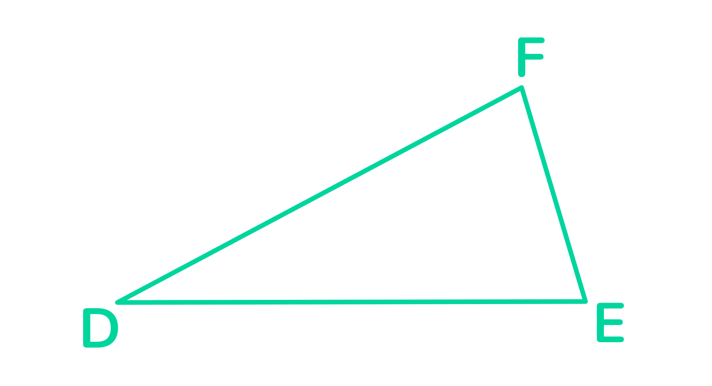
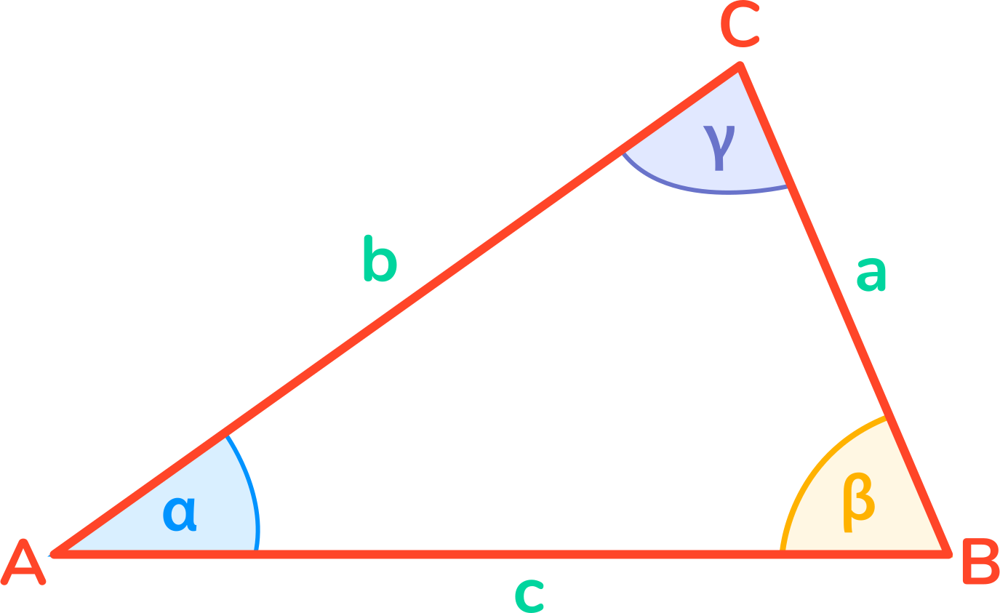

Planimetria
Cechy przystawania trójkątów


To, że dwa trójkąty ABC i DEF są przystające, możemy stwierdzić na podstawie każdej z następujących cech przystawania trójkątów:
- cecha przystawania „bok – bok – bok”: odpowiadające sobie boki obu trójkątów mają te same długości: |AB|=|DE| , |AC|=|DF|, |BC|=|EF|
- cecha przystawania „bok – kąt – bok”: np. |AB|=|DE|, |AC|=|DF|, kątów |BAC|=|EDF|
- cecha przystawania „kąt – bok – kąt”: jeden bok jednego trójkąta ma tę samą długość, co odpowiadający mu bok drugiego trójkąta oraz miary odpowiadających sobie kątów obu trójkątów, przyległych do boku, są równe, np. |AB|=|DE|, kątów |BAC|=|EDF|, kątów |ABC|=|DEF|
Cechy podobieństwa trójkątów

To, że dwa trójkąty ABC i DEF są podobne, możemy stwierdzić na podstawie każdej z następujących cech podobieństwa trójkątów:
- cecha podobieństwa „bok – bok – bok” – długości boków jednego trójkąta są proporcjonalne do odpowiednich długości boków drugiego trójkąta
- cecha podobieństwa „bok – kąt – bok” – długości dwóch boków jednego trójkąta są proporcjonalne do odpowiednich długości dwóch boków drugiego trójkąta i kąty między tymi parami boków są przystające
- cecha podobieństwa „kąt – kąt – kąt” – dwa kąty jednego trójkąta są przystające do odpowiednich dwóch kątów drugiego trójkąta (więc też i trzecie kąty obu trójkątów są przystające)
Oznaczenia w trójkącie ABC:

a, b, c
– długości boków, leżących odpowiednio
naprzeciwko wierzchołków A, B, C
naprzeciwko wierzchołków A, B, C
2p=a+b+c
– obwód trójkąta
α, β, γ
– miary kątów przy wierzchołkach A, B, C
ha, hb, hc
– wysokości opuszczone z wierzchołków A, B, C
R, r
– promienie okręgów opisanego i wpisanego
Twierdzenie Pitagorasa
Kiedy kąt γ jest prosty:
\[ a^{2}+b^{2}=c^{2} \]
Czyli suma kwadratów długości przyprostokątnych równa się kwadratowi długości przeciwprostokątnej.
Związki miarowe w trójkącie prostokątnym
Załóżmy, że kąt γ jest prosty. Wówczas:

\[ a=c*sin \alpha =c*cos \beta \]
\[ a=b*tg \alpha =b*\frac{1}{tg \beta} \]
\[ h_{c}^{2}=\left|AD \right|*\left|DB \right| \]
\[ h_{c}=\frac{ab}{c} \]
\[ R=\frac{1}{2}*c \]
\[ r=\frac{a+b-c}{2} \]
Trójkąt równoboczny

\[ h=\frac{a\sqrt{3}}{2} \]
\[ P=\frac{a^{2}\sqrt{3}}{4} \]
\[ R=\frac{2}{3}h \]
\[ r=\frac{1}{3}h \]